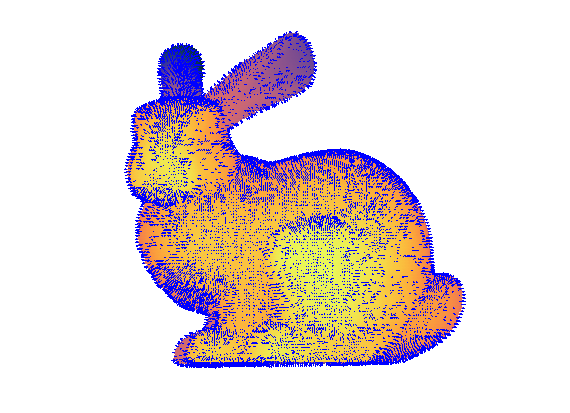
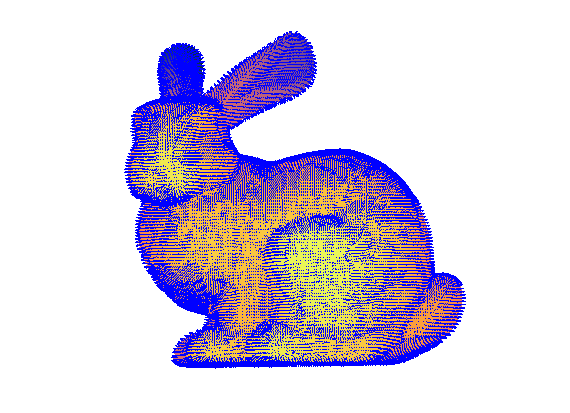

WME_orient_nom
Orient normal vectors on (hypersurface) point clouds to get a consistent global normal vector field.
Contents
Syntax
- nom = WME_orient_nom(X, nom)
- nom = WME_orient_nom(X, nom, 'K', k)
Description
- nom = WME_orient_nom(X, nom) produces a consistent normal vector field nom with the same size as point cloud X
- nom = WME_orient_nom(X, nom, 'K', k) specifies the kNN paramter k when constructing the kNN graph. The default value is 11. Note that small k will yield disconnected graph while large k will increase the complexity
Example
p = WME_read_data('ply','bunny.ply'); X = p.Location; [tgtBasis, nomBasis] = WME_tangent_spaces(X, 2); nom = zeros(p.Count,3); for i = 1:p.Count nom(i,:) = nomBasis(:,:,i)'; end WME_draw_points(X,'curv',X(:,3),'view',[0,90]); hold on WME_draw_normals(X, nom) hold off
The point cloud consists of 35947 points sampled from 2 dim submanifold in 3 dim Euclidean space
nom = WME_orient_nom(X, nom); WME_draw_points(X,'curv',X(:,3),'view',[0,90]); hold on WME_draw_normals(X, -nom) hold off
References
The algorithm is implemented from H.Hoppe etc.'s paper
Hugues Hoppe, Tony DeRose, Tom Duchamp, John McDonald, Werner Stuetzle. Surface reconstruction from unorganized points. ACM SIGGRAPH 1992 Proceedings, 71-78.
Contact
Author: Yueqi Cao Email: bityueqi@gmail.com Web: https://yueqihome.site